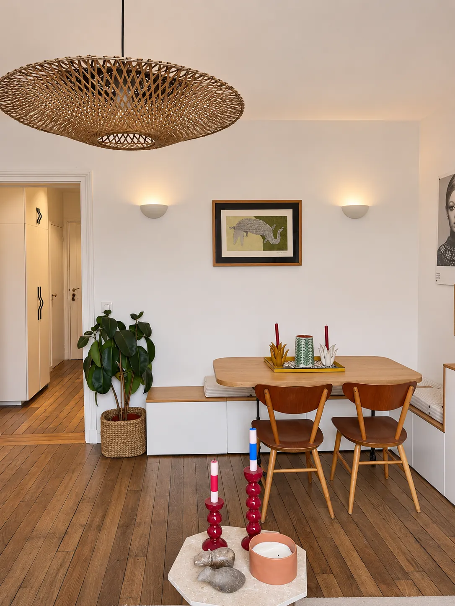
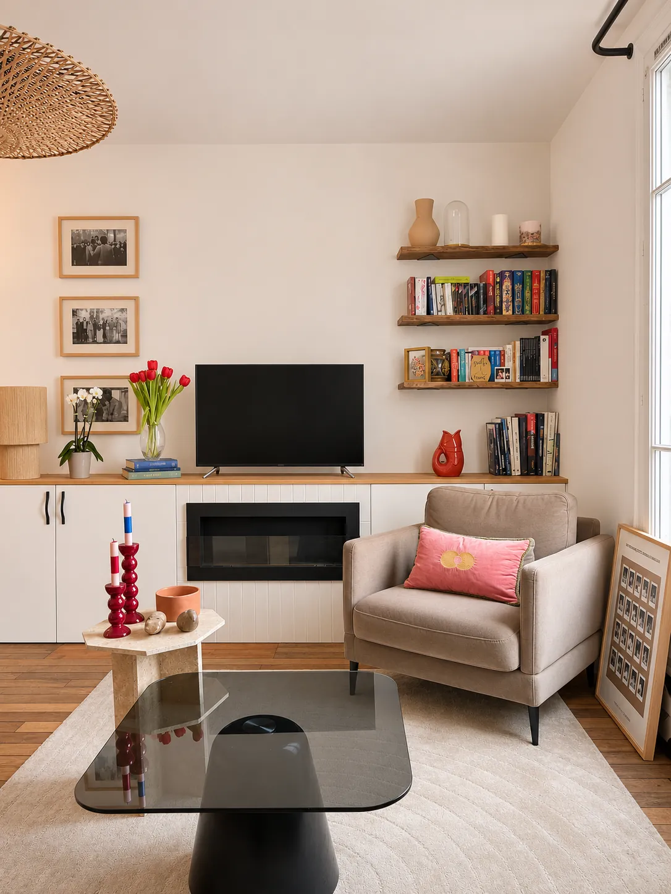
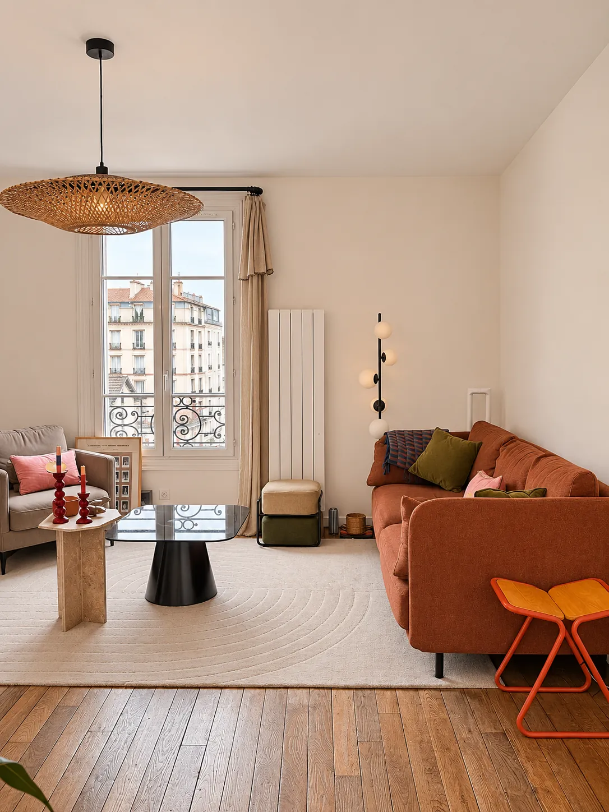
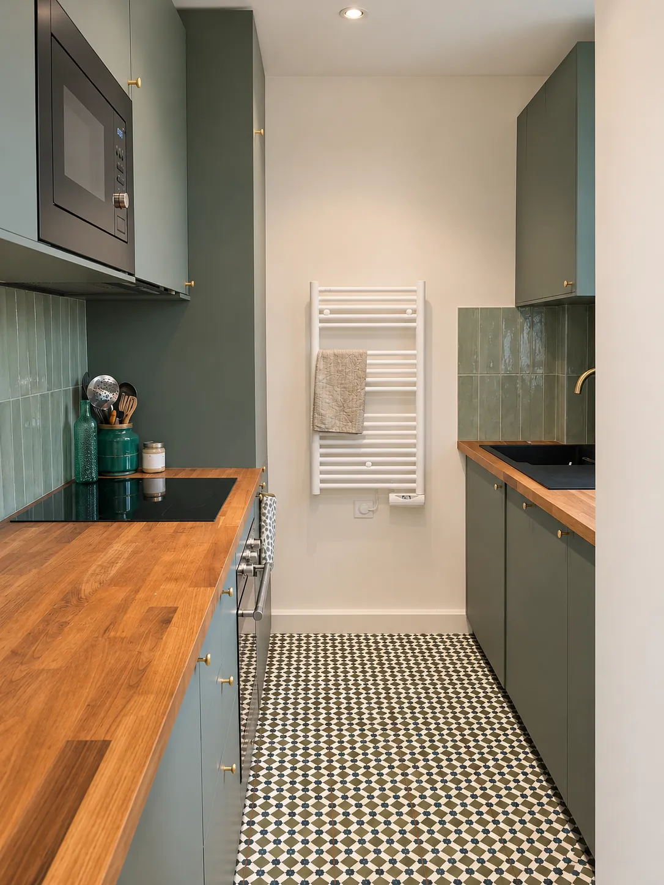
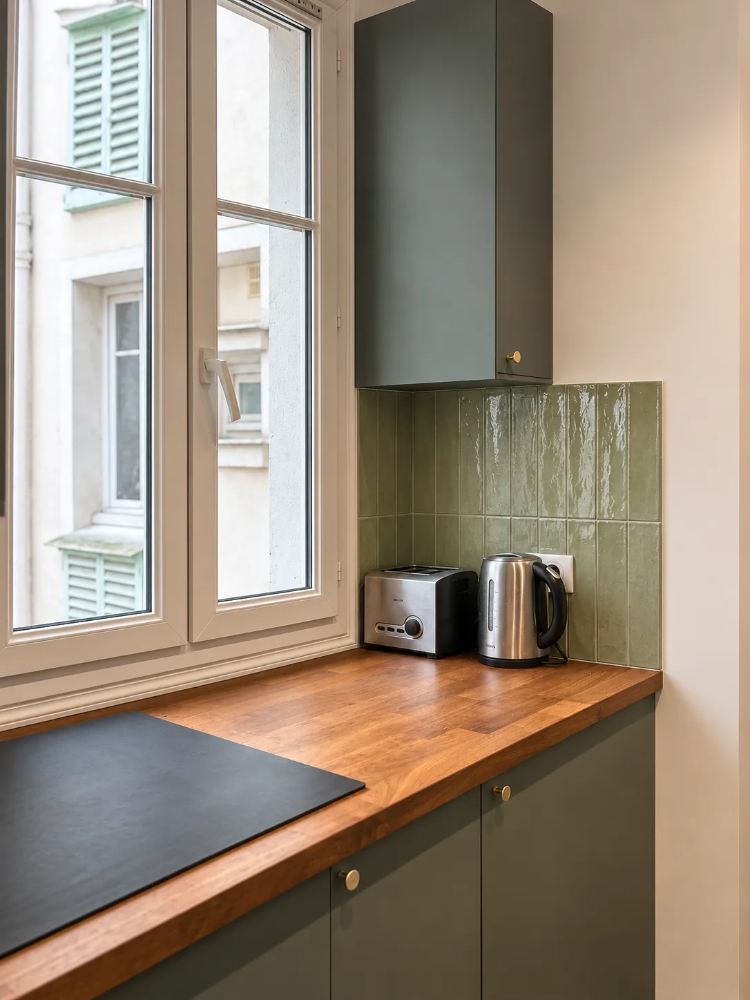
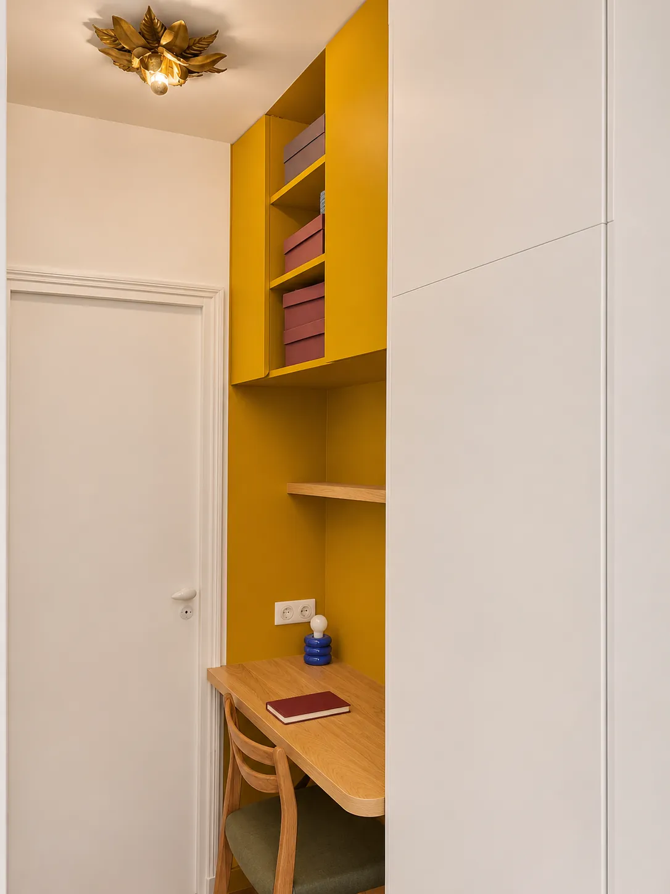
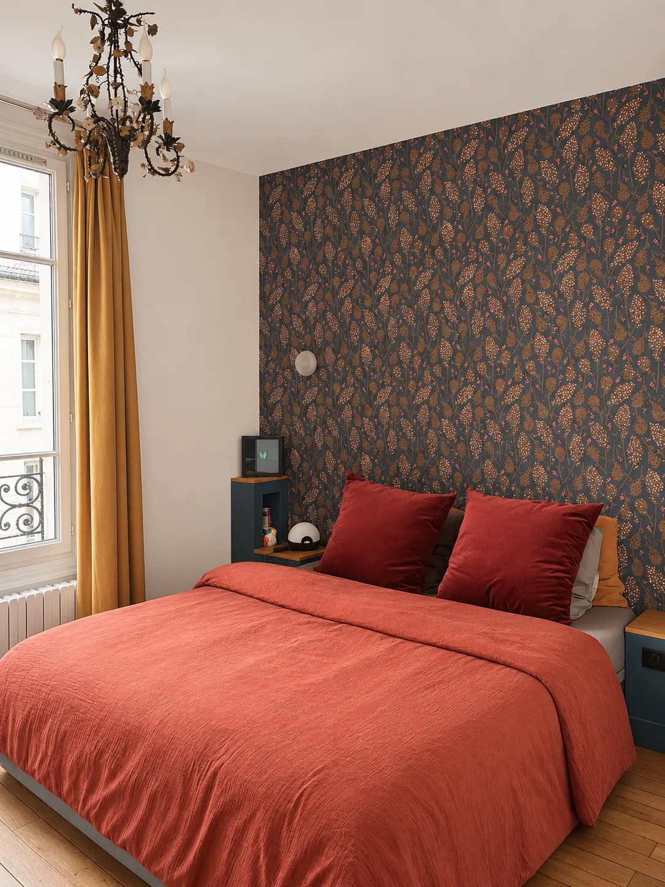
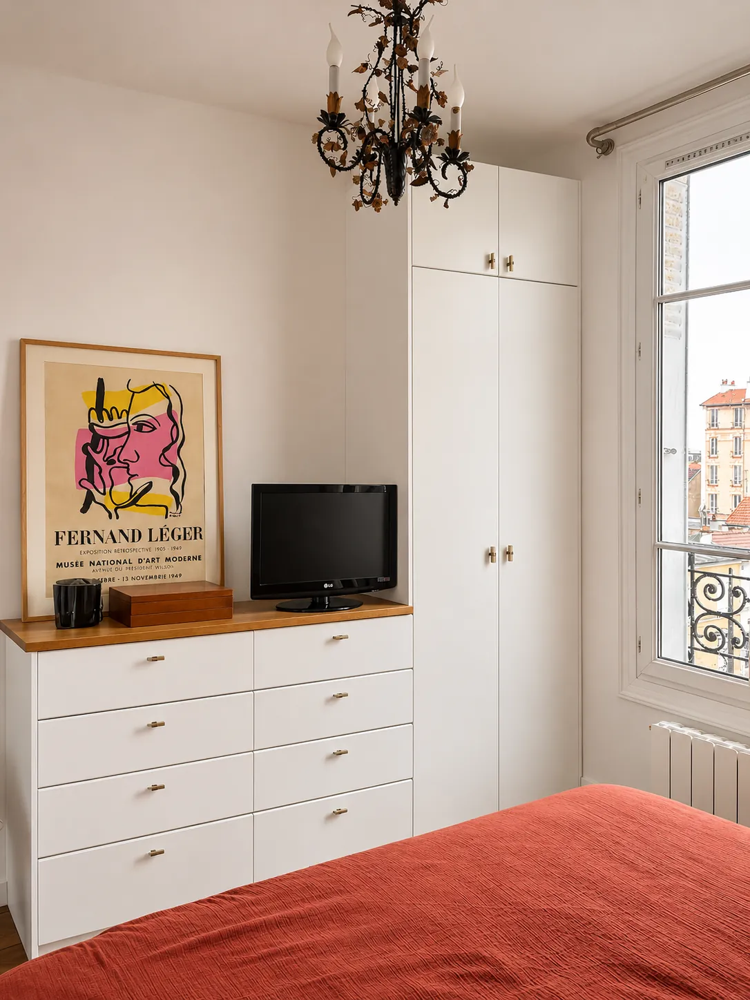
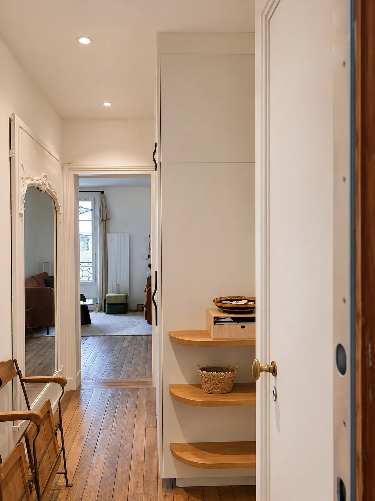
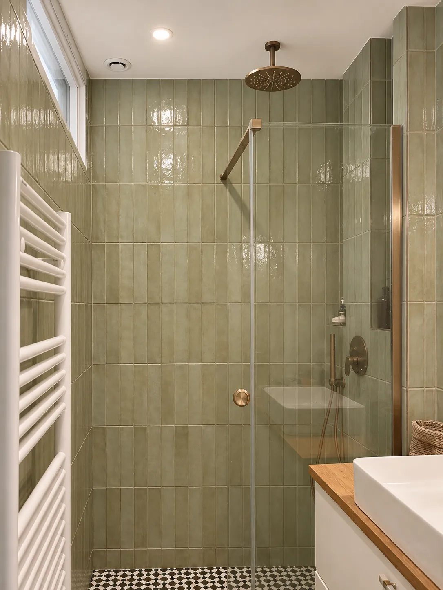

Stouls Studio / Portfolio / Pied-à-terre, Montrouge
Pied-à-terre, Montrouge
Un pied-à-terre de 46 m² aux portes sud de Paris, entièrement rénové, lumineux et coloré.
- Type
- Pied-à-terre
- Lieu
- Montrouge, au sud de Paris
- Surface
- Environ 46 m²
- Intervention du studio
- Rénovation complète
Le séjour s'organise le long d'un mur : un grand linéaire de placards blancs à plateau de chêne porte la télévision et une cheminée encastrée, avec des étagères pour les livres au-dessus. La table à manger se tient à l'entrée de la pièce, sur un banc de rangement qui court le long du mur.
La cuisine est en couloir, vert profond, avec un plan de travail en bois massif, une crédence en carreaux émaillés verts et un sol à motifs noirs et blancs. Dans le couloir, un bureau et ses étagères sont logés dans une niche peinte en jaune moutarde.
La chambre a un mur de papier peint végétal sombre derrière le lit, et une commode et une penderie blanches intégrées près de la fenêtre. La salle d'eau est carrelée en vert sauge du sol au plafond.











Un projet comme celui-ci
Si ce projet ressemble à ce que vous avez en tête, dites-le-moi. Un lien vers cette page et deux lignes sur votre budget et votre calendrier suffisent pour commencer.
Précédent : Pied-à-terre, rue de l'Exposition, Paris 7eSuivant : Appartement, Montmartre